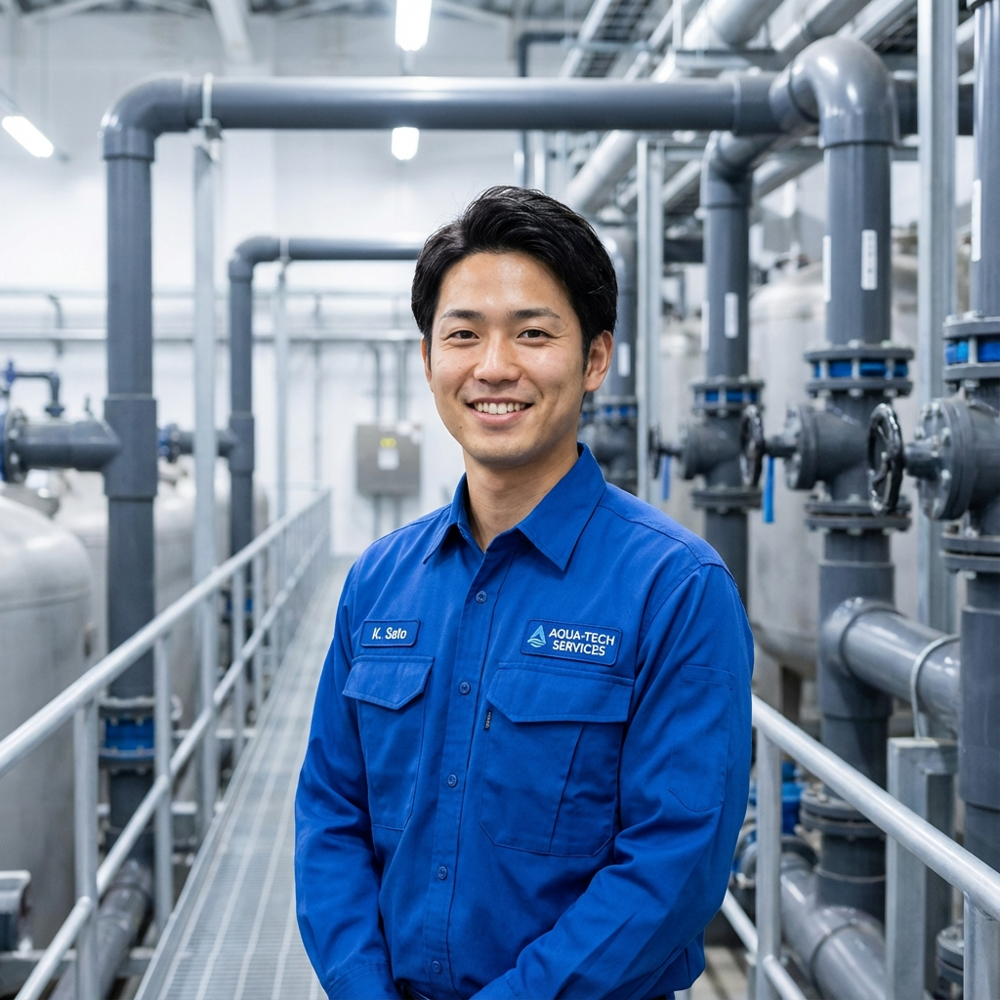
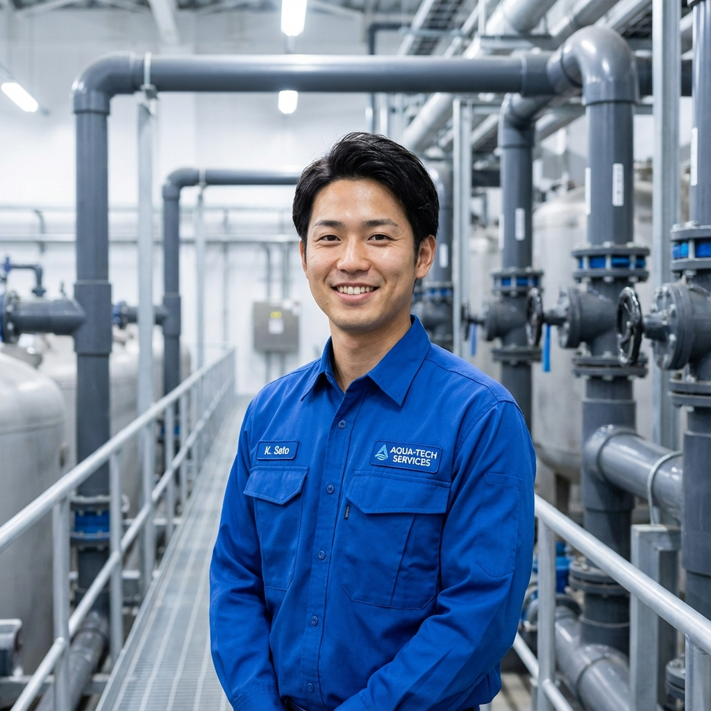
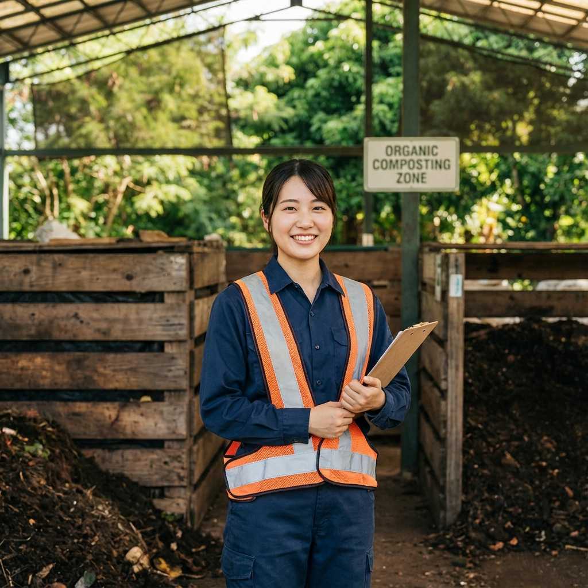
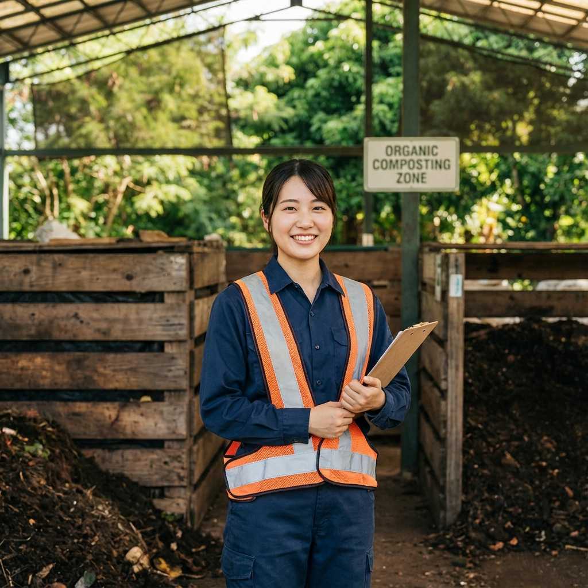
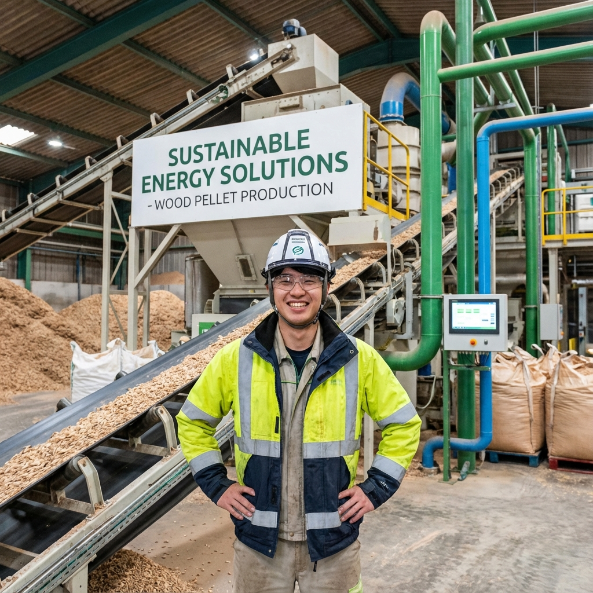
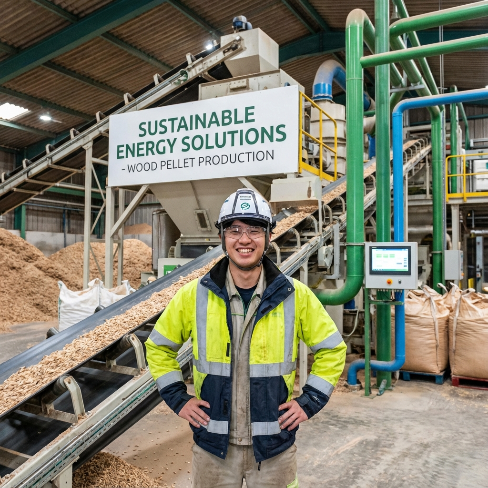
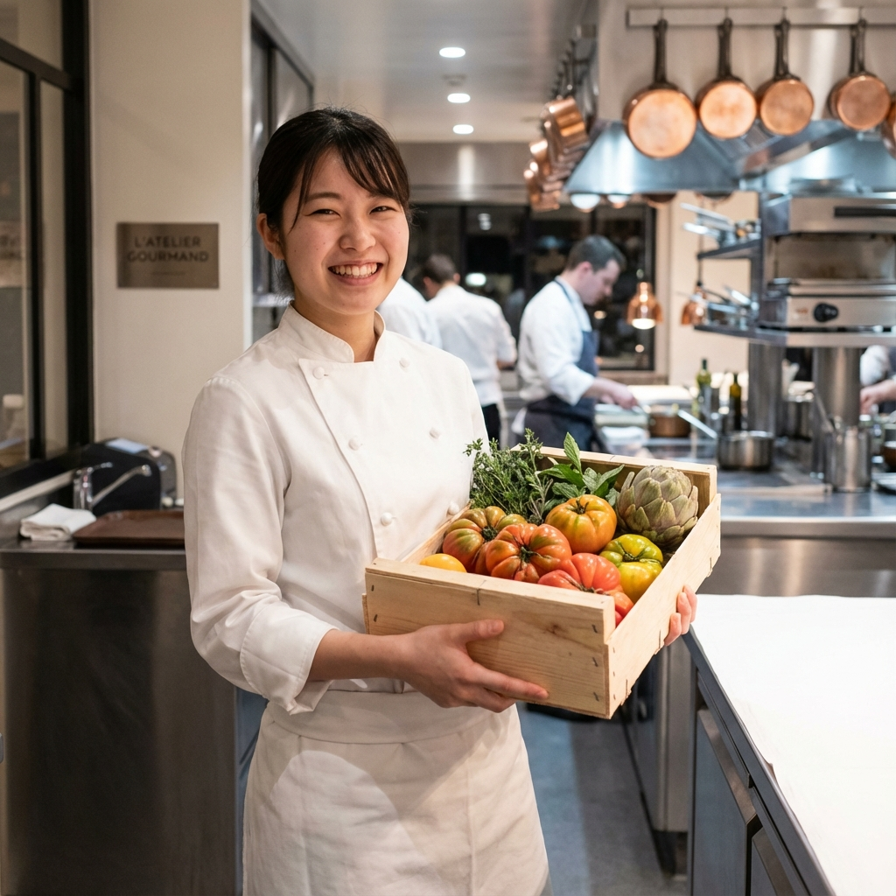
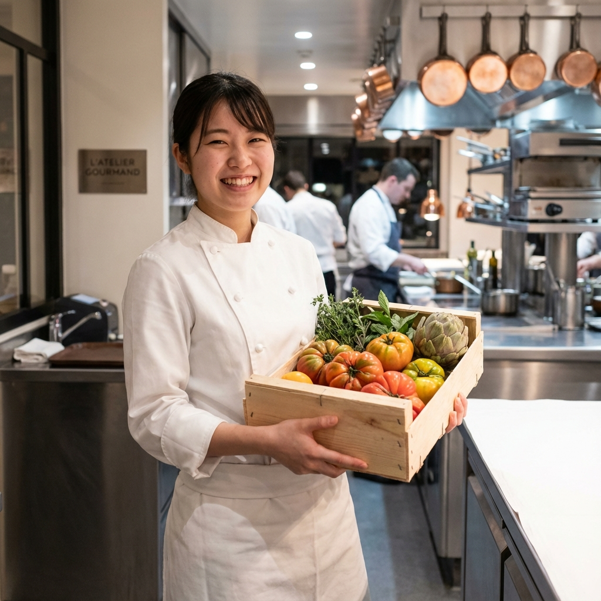
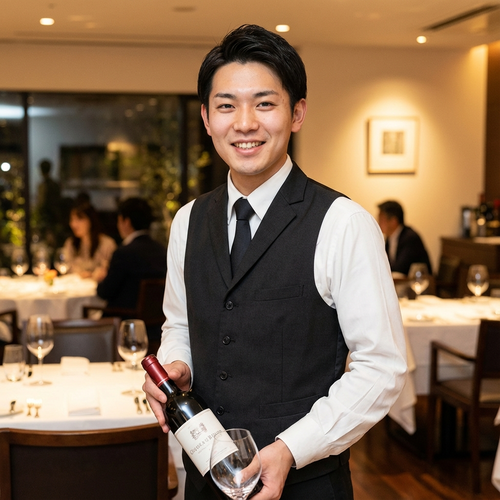

部署紹介
各部署で活躍する社員の声と共に、仕事の内容をご紹介します。
メンテナンス事業部
浄化槽や給水設備の維持管理、下水道の調査・補修を担当。 地域のライフラインを守る、社会インフラの要となる部門です。
 

募集要項
| 職種 | 設備メンテナンススタッフ |
|---|---|
| 業務内容 | 浄化槽・給水設備の点検・維持管理、下水道調査・補修工事 |
| 応募資格 | 普通自動車免許（AT限定可）、未経験者歓迎 |
| 勤務地 | 愛知県知多郡阿久比町 |
| 給与 | 月給22万円〜35万円（経験・能力による） |
| 待遇 | 社会保険完備、資格取得支援、賞与年2回、交通費支給 |
環境事業部
一般・産業廃棄物の収集運搬処理、食品リサイクル「アグエコ」を担当。 持続可能な社会の実現に向けて、資源循環を推進します。
 

募集要項
| 職種 | リサイクルスタッフ / ドライバー |
|---|---|
| 業務内容 | 廃棄物の収集運搬、リサイクル処理、堆肥製造 |
| 応募資格 | 普通自動車免許、中型免許あれば尚可 |
| 勤務地 | 愛知県知多郡阿久比町 |
| 給与 | 月給20万円〜32万円（経験・能力による） |
| 待遇 | 社会保険完備、各種手当、賞与年2回、交通費支給 |
資源循環推進事業部
ペレット燃料の製造・販売、堆肥製造・販売を担当。 バイオマス資源の活用で、カーボンニュートラルな社会を目指します。
 

募集要項
| 職種 | 製造スタッフ / 品質管理 |
|---|---|
| 業務内容 | ペレット燃料・堆肥の製造、品質管理、出荷業務 |
| 応募資格 | 高卒以上、未経験者歓迎 |
| 勤務地 | 愛知県知多郡阿久比町 |
| 給与 | 月給20万円〜30万円（経験・能力による） |
| 待遇 | 社会保険完備、各種手当、賞与年2回、交通費支給 |
キッチン部門
知多半島の食材を活かした創作フレンチを提供。 シェフ鈴木孝典の下、本格的なフレンチ技術を学べます。
 

募集要項
| 職種 | 調理スタッフ |
|---|---|
| 業務内容 | フレンチレストランでの調理補助、食材管理 |
| 応募資格 | 調理師免許または調理経験者、意欲のある方 |
| 勤務地 | 愛知県半田市（HANROK） |
| 給与 | 月給22万円〜40万円（経験・能力による） |
| 待遇 | 社会保険完備、まかない付き、賞与年2回、研修制度 |
ホール・サービス部門
歴史ある空間で最高のおもてなしを提供。 ソムリエ資格取得支援など、プロフェッショナルを目指せます。

募集要項
| 職種 | ホールスタッフ / ソムリエ |
|---|---|
| 業務内容 | 接客サービス、ワインサービス、予約管理 |
| 応募資格 | サービス経験者優遇、未経験者も歓迎 |
| 勤務地 | 愛知県半田市（HANROK） |
| 給与 | 月給20万円〜35万円（経験・能力による） |
| 待遇 | 社会保険完備、まかない付き、資格取得支援、賞与年2回 |
管理部門
経理・総務・人事など、グループ全体のバックオフィスを担当。 事業の成長を支える重要なポジションです。
募集要項
| 職種 | 経理 / 総務 / 人事 |
|---|---|
| 業務内容 | 経理業務、労務管理、採用活動、総務全般 |
| 応募資格 | 事務経験者、簿記資格保持者優遇 |
| 勤務地 | 愛知県知多郡阿久比町（本社） |
| 給与 | 月給20万円〜30万円（経験・能力による） |
| 待遇 | 社会保険完備、各種手当、賞与年2回、有給休暇 |